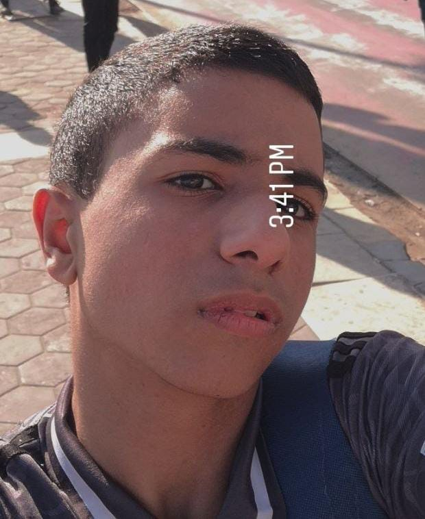
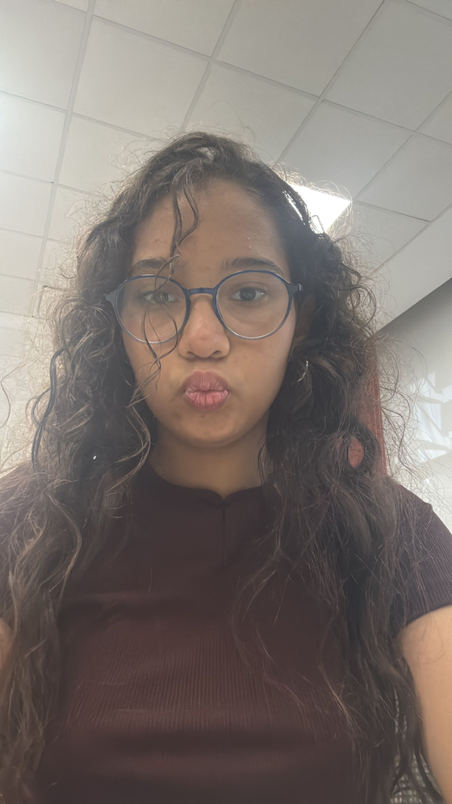
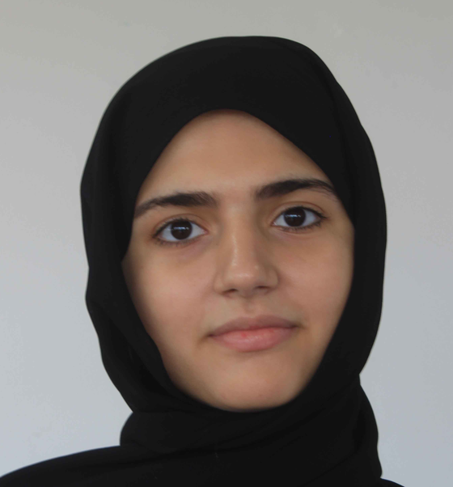

منهجيتنا
تعرّف على كيفية تحقق MedicaLogic من الادعاءات، ومن أين تأتي أدلته، وكيف نختبره.
تعرّف على كيفية تحقق MedicaLogic من الادعاءات، ومن أين تأتي أدلته، وكيف نختبره.
تلصق ادعاءً صحياً أو نصاً من منشور، بالعربية أو الإنجليزية.
نقارنه بقاعدة بيانات فريقنا للادعاءات الموثّقة. وإذا كان جديداً، نبحث مباشرة في PubMed (المراجعات المنهجية أولاً) وفي MedlinePlus.
يقرأ الذكاء الاصطناعي الأبحاث التي عثرنا عليها فقط، ويكتب حكماً وملخصاً قصيراً، ولا يمكنه الاستشهاد بأي مصدر لم نسترجعه.
يقيّم مقياس التلاعب العاطفي صياغة النص، وتُحفظ الادعاءات التي لم نتمكن من الإجابة عنها ليراجعها فريقنا البحثي.
تستند إجاباتنا إلى أبحاث PubMed، مع تقديم المراجعات المنهجية والتحليلات التلوية أولاً، وإلى صفحات MedlinePlus الصادرة عن المكتبة الوطنية الأمريكية للطب. ونتحقق من كل بحث نستشهد به في PubMed قبل عرضه، وأي مرجع يختلقه الذكاء الاصطناعي يُحذف تلقائياً. وعندما تكون الأدلة قليلة أو متضاربة، نوضح ذلك بدلاً من التخمين. MedicaLogic أداة تعليمية وليست تشخيصاً طبياً.
تم تطوير مشروع MedicaLogic لتحدي برنامج Junior Academy التابع لأكاديمية نيويورك للعلوم (NYAS) لعام 2026، ويساعد المعلمين والمدافعين عن الصحة على مواجهة انتشار المعلومات الصحية المضللة، بما فيها تلك التي ينشرها الذكاء الاصطناعي، بأدوات تتيح التحقق السريع من الادعاءات. ويقف وراءه فريق جمع نقاط قوة كل عضو من أعضائه.

قائد الفريق ومطور الواجهة الأمامية
مطور الواجهة الخلفية

مسؤولة البحث والأخلاقيات والعرض التقديمي
مسؤولة البحث

مصممة واجهات وتجربة المستخدم
مسؤول أخلاقيات البحث